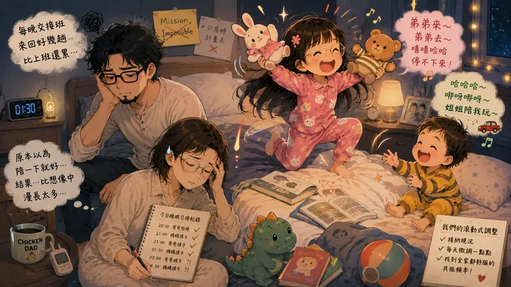

「五歲了，應該要自己睡了吧？」這句話，是許多父母都聽過的話。書上這樣寫、專家這樣說、身邊的親友也這樣提醒。彷彿到了某個年紀，孩子就應該自動學會獨立入睡。但事情往往不是想得那麼簡單。

如果獨立沒有照著教科書長大？
我們家鼠姊姊快六歲了，原本以為到了可以自己睡的年紀，但事情並沒有想像中順利。家裡原本就有兩張雙人床，也有足夠的房間，因此和鼠姐姐討論好，讓她有自己的房間。可以自己佈置、有自己的書桌、自己的床，她也開開心心的佈置，只大概維持了～一天。
第二天晚上，她就抱著棉被跑回來找鼠媽媽，說她發現黑黑的會怕，加了小夜燈還是會怕，需要有人陪她睡一下。然而只要爸爸媽媽一起身離開房間，就又醒來哭哭了～
於是鼠姊姊的獨立議題，變成雞爸爸和鼠媽媽的「Mission Impossible」。
每晚頻繁交接 爸媽變成分房睡的主角
晚上雞爸爸要先在鼠姊姊的房間說故事，等鼠媽媽把一歲半的龍弟弟哄睡之後，過來和爸爸交換房間。等到半夜龍弟弟醒來時，爸爸媽媽作第二次的交換。有時候一個晚上來回好幾趟，簡直像在進行交接班。當時我們以為，只要多陪一段時間，孩子自然就會適應。
結果所謂的「過渡期」，比想像中漫長許多，爸媽甚至比小孩還累。最近，我們決定不再執著於分房這件事。反正是兩張雙人床，乾脆大家回到同一個房間。
開心的蜜月期過後 又是另一個課題
因為鼠姐姐終於可以鼠媽媽和龍弟弟一起睡了，鼠姐姐很開心的提前半個小時上床。還很貼心的照顧弟弟睡覺。我們很開心姐姐長大了，這蜜月期大概又維持了～一天吧。
現在每天晚上21:30熄燈後，房間變成幼兒園遊戲間。姐姐一直弟弟來～弟弟去～。弟弟也咿咿呀呀。姐姐笑，弟弟跟著笑。弟弟哭，姐姐也跟著睡不著～
明明兩個人都已經累到眼皮快闔上，卻還是捨不得睡覺～
只能期待我們的滾動式調整，能夠找到和諧的共振頻率．．．
原來獨立睡覺從來不是年齡問題，其實更像是一個安全感問題。 以及讓爸媽焦慮的問題...